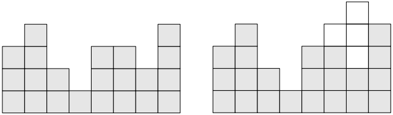

有一张 $N$ 列的 "直方图" (即无限行 $N$ 列的方格表，满足每列中最下面的若干个小方格被标记)，用 $\left( i, j \right)$ 表示左数第 $i$ 列下数第 $j$ 行的小方格。
设直方图中第 $i$ 列的高度 (即第 $i$ 列被标记的格子数目) 为 $h_i$。
你现在可以进行不超过 $V$ 次 "扩展" 操作，每次 "扩展" 操作如下：
如下图，它通过 $4$ 次操作将 (高度为 $4$ 的) 直方图的高度变味了 $5$。
求在不超过 $V$ 次操作后，直方图中最高一列的高度 $\max\limits_{1 \leq i \leq n} h'_i$ 的最大值。
第一行包含两个非负整数 $n, V$ ($1 \leq n \leq 10^5; 0 \leq V \leq 10^{18}$)，分别表示方格表 (直方图) 的列数和 "扩展" 操作使用次数的上限。
第二行包含 $n$ 个正整数 $h_1, h_2, \cdots, h_n$ ($1 \leq h_i \leq 10^9$)，依次表示方格表 (直方图) 中每一列的高度。
输出一行一个整数，表示在不超过 $V$ 次操作后，直方图最高一列的高度的最大值。
给定操作次数求高度并不太方便，而给定高度求操作次数 (添加的格子数的最小值) 相对容易些，因此考虑二分答案，转化为 (对偶问题) 对于给定的高度 $y$，为了到达这个高度至少需要再标记多少个格子，或说明无法到达这个高度。
(显然答案具有单调性，因此可以二分)
对于给定的高度 $y$，我们需要求出达到这个高度所需添加的格子数量的最小值。首先考虑枚举是哪一列达到这个高度的，不妨设为第 $c$ 列。
可以不妨假设 $y > \max\limits_{1 \leq i \leq n} h_i$，因此第 $c$ 列的初始高度没有达到 $h$，由放置的规则可知第 $c - 1, c, c + 1$ 列的最终高度都要 $\geq y - 1$。
此时，如果第 $c - 1$ 列的高度 $h_{c - 1} < y - 1$，那么 $\left( c - 1, y - 1 \right)$ 也需要被标记，由规则可知第 $c - 2$ 列的最终高度要 $\geq y - 2$。
这样以此类推，直到找到一个 $l$，满足 $h_{c - l} \geq y - l$，然后我们就不用向左递推了，从这一个基点开始 "搭积木" 即可。
同理，我们还能找到一个 $r$ 满足 $h_{c + r} \geq y - r$。于是整个策略就是将区间 $\left( l, r \right)$ 填成阶梯状。所需的操作次数也不难计算，它就等于 $$ \sum_{i = \color {red} 0}^l \left( y - i - h_{c - i} \right) + \sum_{i = \color {red} 1}^r \left( y - i - h_{c + i} \right) \tag 1 \label 1 $$
即两个等差数列求和加上一个 $h$ 的区间和。因此剩下的任务就是如何对每个 $c$ 找到与之对应的 $l$ 和 $r$。
由对称性只需考虑 $l$。那么，对一个 $c$，设 $d \left( c \right) = c - l$，则 $d$ 需要满足 $$ h_d \geq y - c + d $$
因为 $d$ 出现了两次而 $c$ 只出现一次，因此考虑使用刷表的思想，可知，对于固定的 $d$，某个 $c$ 可以使用它，当且仅当 $$ c \geq d + y - h_d $$
于是我们只需要枚举 $d$，然后可知它能更新的 $c$ 是一段后缀。于是 $d \left( c \right)$ 关于 $c$ 单调递增，只需要处理出关键点后做一遍前缀 $\max$ 即可。
对于 $r$ 的情形也是一样的。也就是说我们可以在 $O \left( n \right)$ 时间内求出给定高度 $y$ 所需的代价。容易发现答案一定介于区间 $\left[ \max\limits_{1 \leq i \leq n} h_i, \max\limits_{1 \leq i \leq n} h_i + \dfrac n2 \right]$ 中，因此二分的次数为 $O \left( \log n \right)$，也就是说总时间复杂度 $O \left( n \log n \right)$。
#include <bits/stdc++.h>
using std::cin;
using std::cout;
typedef long long ll;
const int N = 100054;
int n, h[N];
int L[N], R[N];
ll V, H[N];
inline void up(int &x, const int y) {x < y ? x = y : 0;}
inline void down(int &x, const int y) {x > y ? x = y : 0;}
inline ll arith(int l, int r) {return (l + r) * (r - l + 1ll) / 2;}
inline bool check(int y) {
int i;
memset(L, 0, (n + 2) << 2), memset(R, 63, (n + 2) << 2);
for (i = 1; i <= n; ++i) {
up(L[i], L[i - 1]);
if (i + y - h[i] <= n) L[i + y - h[i]] = i;
}
for (i = n; i; --i) {
down(R[i], R[i + 1]);
if (i > y - h[i]) R[i - y + h[i]] = i;
}
for (i = 1; i <= n; ++i)
if (0 < L[i] && R[i] <= n && H[R[i] - 1] - H[L[i]] + V
>= arith(y - (i - L[i]) + 1, y) + arith(y - (R[i] - i) + 1, y - 1)) return true;
return false;
}
int main() {
int i, L = 0, R, M;
std::ios::sync_with_stdio(false), cin.tie(NULL);
cin >> n >> V;
for (i = 1; i <= n; ++i) cin >> h[i], H[i] = H[i - 1] + h[i], up(L, h[i]);
for (R = L + (n - 1) / 2; L < R; check(M = (L + R + 1) / 2) ? L = M : R = M - 1);
cout << L << '\n';
return 0;
}
坑1：阶梯状的等差数列求和时，中间第 $c$ 列的求和应当恰好被算一次，不要多算也不要少算 ($\eqref 1$ 式中的红色部分)。
坑2：二分时注意上下界，如下界设为 $y = \max\limits_{1 \leq i \leq n} h_i$ 可以避免 $y < h_c$ 等无谓的讨论。